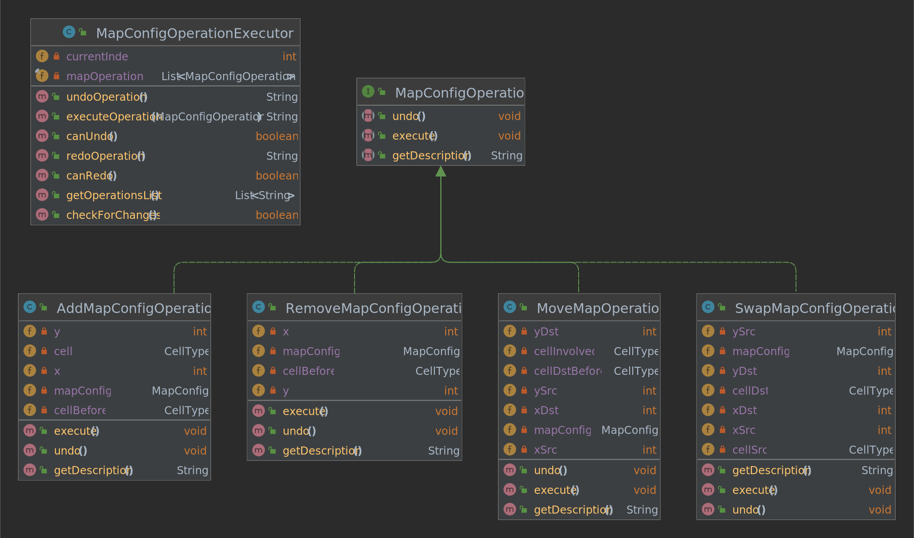

Project
The project contains all the software our team developed for the core-business of the project. We divided our work in 3 sub-sprint, one for each block of software we implemented:- Sprint 1.1 SmartDevice Simulator & Echo Waste Server
- Sprint 1.2 Map Editor
- Sprint 1.3 Waste Service
Logical Architecture
The main change in the logical architecture from the Problem Analysis is the context specialization: during the project phase we modeled the system by using:-
one
context for the waste service business logic (accepting and processing of the requests and updating of the storage status); -
one
context for the execution of the real deposit operations (performed by the transport trolley) which is transparent to the user (truck diver).
 QAK model: project_logical_architecture.qak
QAK model: project_logical_architecture.qak
Sprint 1.1: SmartDevice Simulator
It has been made using Flutter, which is a Google framework to build applications which can be built for different architectures.

Flutter: Build apps for any screen.
It presents 2 view:
-
ViewHome : shows 2 input fields to enter the IP address and port of the server (the WasteService) and a button to try to connect. If the connection succeeds, the application will show the ViewRequest. -
ViewRequest : as soon as that view is built, it sends a TypesRequest to the WasteService, to know which waste types can be deposited in the service area. Once those types are obtained, a drop down menu will be displayed, to allow the user to choose the Waste Type. There is also another input field for the Waste Weight. Once the user press the "Send Store Request" button, a StoreRequest is sent to the WasteService, and the application displays a waiting message and greys the button, to prevent the user from spamming requests. When the reply is retrieved, the view shows a message, informing the user if the load has been accepted and picked up or not.
Views


Class Diagram

Sprint 1.1: Echo Waste Server
store_requests with load_accepted / load_rejected,
updating the capacity of containers and logging messages.
It doesn't contribute to the WasteService project in any way, and its main purpose was to test the SmartDevice directly and completely on smartphone, without having to connect it to another device. But since we had already developed it, we decided to include it in the project section.
Demo
Sprint 1.2: Map Editor
Demo


The MapConfiguration consists of a Java object (MapConfig) which is built starting from a RoomMap (defined in unibo.planner22): they have the same dimensions. That configuration can be saved as a binary file to be loaded and used by the WasteService planner afterwards, to generate a path towards those locations.
|H, -, -, -, G, G, G,
|-, -, -, -, -, -, -,
|-, -, -, -, -, -, P,
|-, -, -, -, -, -, P,
|I, I, I, -, -, -, P,
The main aspects of the Map Editor are:
-
It's
easy to use : while writing the coordinate one by one is wasteful and error prone, dragging the already labeled cell in the exact position of the map is a way simpler and less painful way to configure the room. Moreover, this helps the user to realize how the cell are actually arranged inside the room since it displays the graphical representation of the map layout. -
Improves
transparency by hiding what the user doesn't necessarily need to see (the coordinate system). -
It's a
flexible way of configuring the Service Area, since the cell types can be easily extended with new types (the application already provides some extra types not requested by the customer, as an example, such as "ORGANIC", "METAL", etc.). -
It's shipped with some
pretty feature , such as: different edit modes (add, remove, move and swap); possibility to hide/show the base room map, the map configuration, and even the coordinate systems; possibility to display the history of actions performed by the user; possibility to undo/redo actions, implemented through the Command Pattern; editable settings, based on the Singleton Pattern, and persistent (saved using a JSON file, and parsed with Gson library).
Class Diagrams
Map configuration class: Map operation commands: Sprint 1.3: Waste Service
Waste Service Logical Architecture
QAK model: waste_service.qakWasteService
EnumMap<WasteType, Double> that represent an amount of KG
for each WasteType of the service:
-
preStorage -
storage -
storageCapacity
Utils
simulateAction(Double)
PlannerBCR
-
loadMapConfig(String)it.unibo.map_editor_bcr.model.map_config.MapConfig. That's the object containing the meaning of each room map cell. -
showMapConfig()|H, -, -, -, G, G, G, |-, -, -, -, -, -, -, |-, -, -, -, -, -, P, |-, -, -, -, -, -, P, |I, I, I, -, -, -, P, -
showFancyMapConfig()+---------------------+ | H - - - G G G | | - - - - - - - | | - - - - - - P | | - - - - - - P | | I I I - - - P | +---------------------+
-
getNearestPositionToCellType(Pair<Int, Int>, String): Pair<Int, Int>Pair<Int, Int>) of the nearestCellTypestarting from a given coordinate. TheCellTypeis the label associated with a cell (e.g. "HOME", "GLASS", etc.).
build.gradle file:
implementation files('../unibolibs/map_editor_bcr.jar')
QAK Actors
| Actor | Context | Description |
|---|---|---|
| TypesProvider | Ctx_WasteService |
Receive typesRequest |
| WasteService | Ctx_WasteService |
Receive storeRequestloadRejectedloadAccepted |
| TransportTrolley | Ctx_TransportTrolley | Receive the deposit requests from the WasteService and performs them: to simulate the actual pickup and dump of the waste, we delay the execution of an amount which is proportional to the load weight. |
| PathExecutor | Ctx_TransportTrolley | QAK actor provided by our software house, which receives requests containing a path (i.e. a sequence of actions) and the name of the actor that sent the request, and interact with the BasicRobot to perform the actions. |
| BasicRobot | Ctx_Robot | QAK actor provided by our software house, which receives messages (requests for aril commands and dispatches for steps) and interact with the robot implementation (real or virtual) to execute them. |
Virtual Environment (WEnv)
Our software house provided the software to virtually simulate the robot inside the room, in the form of a docker image.To run it simply enter the following command, after moving to its directory (docker needed):
docker-compose -f .\virtualRobotOnly4.0.yaml up
NB: we use the image with only the virtual robot, because our basic robot (which is needed for the simulation to work,
is a QAK actor).
BCR Docker Notes
Run WasteService Contexts
To ease the debugging of the WasteService project, we created 3 gradle task, one for each context:
task(runCtx_WasteService, dependsOn: 'classes', type: JavaExec) {
mainClass = 'it.unibo.ctx_wasteservice.MainCtx_wasteserviceKt'
classpath = sourceSets.main.runtimeClasspath
}
task(runCtx_TransportTrolley, dependsOn: 'classes', type: JavaExec) {
mainClass = 'it.unibo.ctx_transporttrolley.MainCtx_transporttrolleyKt'
classpath = sourceSets.main.runtimeClasspath
}
task(runCtx_Robot, dependsOn: 'classes', type: JavaExec) {
mainClass = 'it.unibo.ctx_robot.MainCtx_robotKt'
classpath = sourceSets.main.runtimeClasspath
}
Those tasks allow us to run each context using a specific, separate gradle demon,
with the following commands:
-
Run the
Robot context:./gradlew runCtx_Robot -
Run the
TransportTrolley context:./gradlew runCtx_TransportTrolley -
Run the
WasteService context:./gradlew runCtx_WasteService
Build WasteService
In order to produce a self-contained JAR for each context, we added the following entries in thebuild.gradle file:
application {
// Define the main class for the application: -P<build_name> (default: WasteService build)
mainClassName = 'it.unibo.ctx_wasteservice.MainCtx_wasteserviceKt'
if (project.hasProperty("build_TransportTrolley")) {
mainClassName = 'it.unibo.ctx_wasteservice.MainCtx_transporttrolleyKt'
} else if (project.hasProperty("build_Robot")) {
mainClassName = 'it.unibo.ctx_wasteservice.MainCtx_robotKt'
}
}
jar {
from sourceSets.main.allSource
println("building $mainClassName jar...")
manifest {
attributes 'Main-Class': "$mainClassName"
}
baseName = project.findProperty('mainClassName')
duplicatesStrategy = DuplicatesStrategy.EXCLUDE
from ((configurations.compileClasspath.findAll{ !it.path.endsWith(".pom") }).collect { it.isDirectory() ? it : zipTree(it) }) {
exclude 'META-INF/MANIFEST.MF'
exclude 'META-INF/*.SF'
exclude 'META-INF/*.DSA'
exclude 'META-INF/*.RSA'
}
}
To build the jar for a specific context, one must pass the correct parameter
with the -P option:
- (Default)
build_WasteService build_TransportTrolleybuild_Robot
./gradlew jar -Pbuild_TransportTrolley
Will produce the JAR named: it.unibo.ctx_transporttrolley.MainCtx_transporttrolleyKt-1.3.jar
Deployment
As a result of the project phase, we produced a series of applications, which can be downloaded from our GitHub repository- SmartDevice Simulator: APK or Desktop version.
- Echo Waste Server: APK or Desktop versions.
- Map Editor BCR: self-containing JAR (requires Java >11).
- WasteService: 3 self-containing JAR, one for each context (requires Java >8).
WasteService Demo
In order to run demo components we need:- Java 8 or more recent
- Gradle 7.4.1 or more recent
- Docker
- Flutter
- run_VirtualRobot.bat - runs the docker image of the WEnv, and opens a new chrome window to show the robot.
-
Run the Waste Service (2 options):
-
Run the service using gradle daemon (IntelliJ project):
run_WasteService.bat - starts 3 gradle demons, one for each context of the WasteService.
NB: in order to run the WasteService project, the dependencies must be resolved by having a folder namedunibolibs, with the needed libraries from our software house (can be downloaded from this link), in the directory one level below the project directory:WasteService/ | +-- Sprint1/ | +-- Sprint1_Project/ | +-- sprint1_waste_service/ +-- unibolibs/ <- libraries (JARs) -
Or run the service using the JARs:
Download the WasteService ZIP archive from our GitHub repository, extract its content, and run the scriptRun_All_Ctx.bat.
-
Run the service using gradle daemon (IntelliJ project):
- Run the Smart Device (2 options):
-
Use the Android Emulator:
- Execute run_AndroidEmulator.bat, which starts a Google Pixel_3a_API_30_x86 emulator (Android);
- Launch run_SmartDevice.bat, which runs the Flutter application on the Android Emulator.
-
Use a real device (requires a smartphone with Android):
- Download the SmartDevice APK from our GitHub repository;
- Install and run the application on your device.
-
Use the Android Emulator:
Setup Remote Communications
Port Forwarding
-
Access to the router page: search
192.168.1.1in a browser, and login with the credentials:
-
Make sure you have selected the
expert user mode:
- Select the
Internetsection and thenPort mapping. -
Specify the information needed:
- Service:
TCP. - (Optional) Device:
your_device_name. - LAN IP address: the IP address of the device where the service runs.
- Port/Interval.
Public port : the port you want to be use (connections to that will be forwarded to the LAN port).- LAN port: the port the service is using.

- Service:
-
Check the
router public IP
router_public_ip :public_port